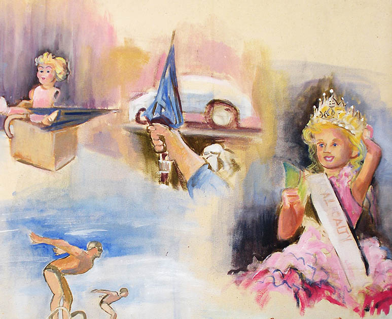
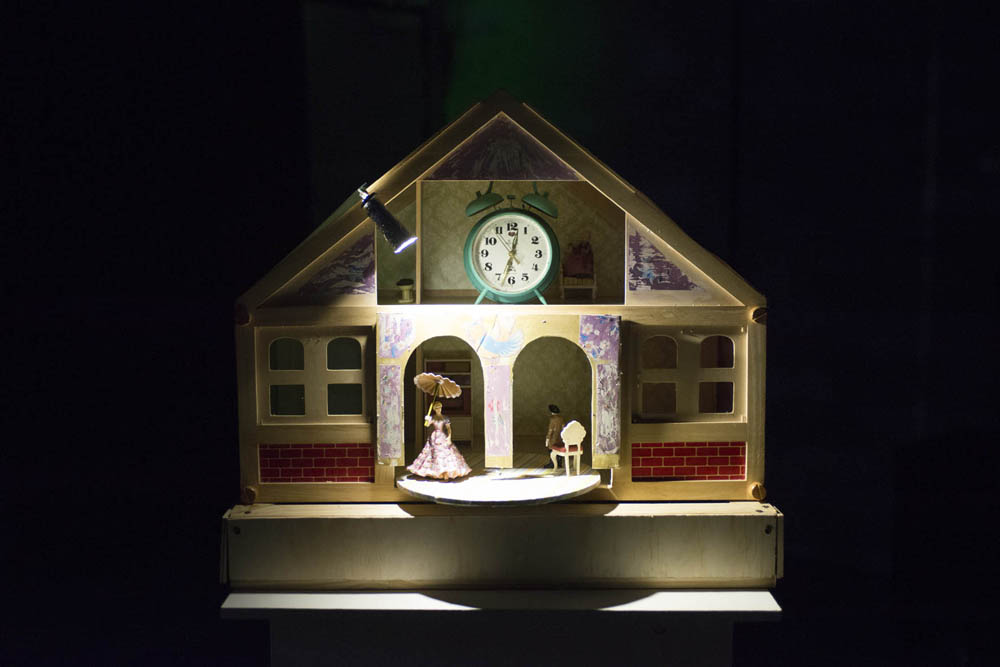
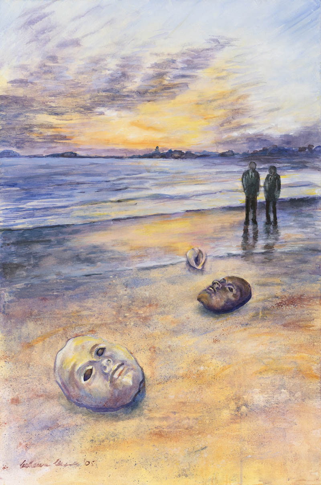

Exploring our dreams helps us discover essential parts of ourselves and outgrow old patterns of thinking. They bring images that remind us that we have an innate ability to transform our lives.
"So, if I tell you my dream, you'll interpret it for me, won't you?”. When Teresa came to my office, she was having great difficulty relating to her new coworker. "Of course not," I replied. That answer puzzled her. "But when we explore the dream," I continued, "you will be able to tell me what it means to you." Smiling, as if she didn't quite believe me, she closed her eyes as I suggested and, in the present tense - as if reliving the experience - she began to narrate her nightmare. It included the image of a plastic doll, dismembered, on the table in her office. It was the only dream she was able to remember at the time, and she had it, interestingly enough, the night before our first appointment.

Teresa didn't remember sharing her dreams with anyone, so why pay attention to them? Our culture, skeptical of their possible meaning or stunned by their complexity, has long trivialized these nocturnal experiences. "It's just a dream," we tell our children when they wake up distressed during the night, hoping that they will quickly forget what frightened them. After all, we usually don’t like to think about things we don’t understand—things which for that very reason frightens us; those strange stories, sometimes scary, usually disconcerting, that occur every time we go to sleep. And not just once, but several times: in the course of a night, we dream between four and six times. Despite this, there are many people who, like Teresa, say they don’t remember their dreams, except for some nightmares that, they argue, they would do better to forget quickly. However, remembering these deeply unpleasant dream experiences can be of great help, because, although they don’t seem to favor our mental health, nightmares are a message, a cry from our psyche that’s asking us to listen to ourselves and realize that there is something going on that we should pay attention to.
In other words, the intensity of this type of dreams responds to the need to ensure that its content won’t be forgotten.
There is no such a thing as a bad dream. They can all help us to recognize aspects of ourselves that we ignore. They also show the innate creative resources we have to relate to day-to-day conflicts and can offer surprising revelations about our emotional world. This was the case for Teresa, who suddenly remembered another broken doll that she especially loved. Her sister smashed it when they were children during a fight. Her sister was five years younger than her; interestingly -she realized- the same age difference as her co-worker. Teresa understood that the rejection she felt towards that girl, a newcomer to the company, was rooted in a complicated relationship with her sister that needed to be reviewed. This is one of the peculiarities of dream language: a curious ability to bring together elements of our past and our present. This was also one of Freud’s observations - one that even his detractors regarded as a key insight, and that, according to many contemporary neuroscientists, reinforces the theory according to which dreaming favors learning.

When Teresa associated the broken doll in her dream with that memory of her childhood, she felt that something in her was released. It is what we call the “eureka -or aha- moment”, the instant when the person understands what the dream is referring to. As I had warned her, it was she herself who would finally find meaning in her nightmare. Other people's suggestions may be interesting, but ultimately only the dreamer can say with certainty what his/her dream means. No one has the right to prevent him/her from experiencing the "eureka moment" of discovery. Although a psychologist who knows the terrain can help you with techniques and good questions, it will be the dreamer themselves who will eventually unravel the dream, link it to waking life, or recognize what issue it brings them in contact with. For this reason, the popular dictionaries of dream symbols are, to say the least, unreliable. In reality, when we explore a dream in search of its meaning, what we are doing is selecting one of many possible meanings. All dreams have multiple layers of meaning, all of which are important. In fact, their images can symbolize different things at the same time. For this reason, I don’t usually speak of discovering the meaning but of building it, since, depending on the maturity of our gaze, our present capacities or the vital area that concerns us, we will tend to explore one or another layer of the dream. It may refer, for example, to the dreamer's relationship with money, to their creativity, to their sexuality, it may be referring to their physical health, to their spirituality.... And it may allude to these or other themes at the same time, so that the dream makes a portrait of the relationship underlying those different aspects, one that we often don’t see clearly in wakefulness. Continuing with Teresa's story, her dream allowed her to see the connection between a social relationship (with her co-worker), a familial one (the one she’d had, and still has, with her sister) and a personal psychological wound. Frequently, the symbols of our dreams refer to elements of our wakefulness and also to internal characteristics of our psyche. Teresa's doll was one of these cases: it was a metaphor of how she had felt as a child. When she saw that her father - always from the perspective of a child who felt that she was daddy's "doll" - paid more attention to her sister than to her, jealousy invaded her.
We could then see that the discomfort that brought her to the consultation - the bad relationship with a colleague who had also received attention from the boss that she considered excessive - was rooted in an experience from her childhood that still affected her. In fact, Teresa "decided" to be responsible, efficient and determined, in reaction to that experience and others like it. She had carried that pattern to try to surpass her sister in her father's eyes, right up to the present. Exploring your dreams helps you outgrow obsolete patterns of thinking and behaviour and allows you to become all that you really are. Instead of thinking of the complexity of dream language as a barrier to understanding, you can understand this feature as a training platform. Even if you don't understand what they refer to, or are not accompanied by a specialist with whom to explore them, attending to your dreams always has positive effects. Dreams remind us that we are much more than we think we are, they put us in touch with controversial aspects of ourselves that we tend to reject and, also, they connect us with our creativity, with our imagination and with a healthily playful perspective. They remind us that we have an innate capacity to transform our outer and inner reality. By listening to your dreams, being fascinated by their language and feeling what they provoke in you, asking yourself about their meaning and trying to take them into account in your waking life, you will be broadening your vision, favoring the awakening of your potential and, in short, becoming more aware of the mystery that you are. It is true that sometimes we don’t remember anything when we wake up. This "forgetfulness" is influenced by several factors: some are physiological, but most are of psychological, social or cultural origin. The good news is that we can change that. Teresa, by the way, not only understood what the dream expressed, but was also able to work on improving her relationship with her sister, her co-worker and, most especially, with herself.

Some time later, she told me another dream: she was at the beach playing with the sand. For her it was unthinkable to act as she did in the dream, carefree and happy. For me, it was the sign that she was ready to relax her pretensions of being what she was not. To close the process, I suggested that she honored that last dream and spent some time alone on the beach, playing with the sand. This way she clearly told her unconscious she’d gotten the message it previously sent to her with that doll dream.